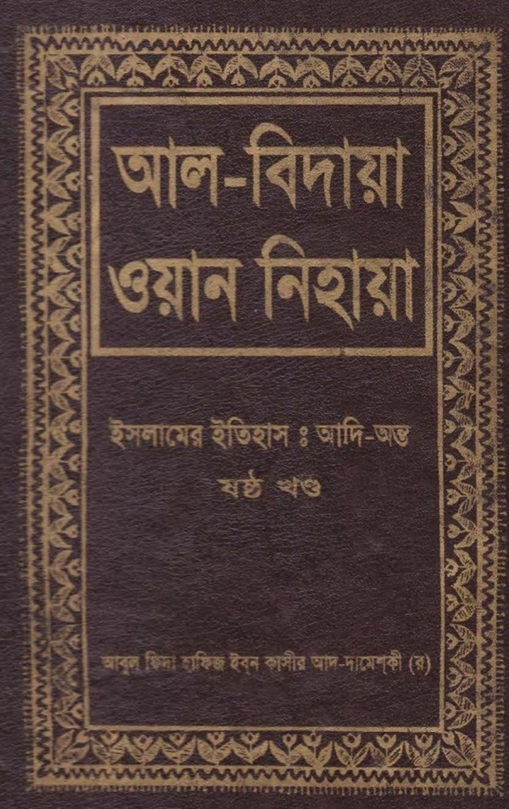

EPUB Browser
Shelf
Annotations
English
English
简体中文
繁體中文
한국어
日本語
Español
Deutsch
Français
Русский
Italiano
Português (Brasil)
العربية
Bahasa Indonesia
हिन्दी
Tiếng Việt
ไทย
Bahasa Melayu
Theme

আল বিদায়া ওয়ান নিহায়া ষষ্ঠ খণ্ড
ইবনে কাসীর আদ-দামেশকী (র)
Islamic History
Start reading
Clear
Add to Shelf
Table of contents
Total: 97
সূচীপত্র
chapter_1.html
নবী করীম (সা)-এর স্মৃতি চিহ্নসমূহ, জীবদ্দশায় তার বিশেষভাবে ব্যবহৃত পরিধেয়, অস্ত্রশস্ত্র ও বাহনসমূহ ও তার ব্যবহৃত আংটি প্রসঙ্গ
chapter_8.html
আবু দাউদের পরবর্তী বর্ণনা: আংটি বর্জন
chapter_8.html
নবী (সা)-এর তরবারির আলোচনা
chapter_8.html
নবী করীম (সা)-এর ব্যবহৃত পাদুকার বর্ণনা
chapter_8.html
নবী করীম (সা)-এর পানপাত্রের বিবরণ
chapter_8.html
নবী করীম (সা)-এর ব্যবহৃত সুরমাদানি
chapter_8.html
নবী করীম (সা)-এর চাদর
chapter_8.html
নবী করীম (সা)-এর ঘোড়া ও অন্যান্য বাহনের বিবরণ
chapter_8.html
কিতাবুশ শামাইল: রাসূল (সা)-এর দেহাবয়ব ও পবিত্র স্বভাব
chapter_9.html
নবী করীম (সা)-এর দীপ্তিময় ও অনুপম সৌন্দর্যের বিবরণ
chapter_9.html
রাসূলুল্লাহ (সা)-এর গাত্রবর্ণের বিবরণ
chapter_9.html
রাসূল (সা)-এর মুখমণ্ডল ও সৌন্দর্যের বিবরণ
chapter_9.html
নবী (সা)-এর কেশ বা চুলের বিবরণ
chapter_9.html
নবী (সা)-এর কাধ, বাহু, বগল, পা ও পায়ের নিম্নাংশের উদ্ভিন্ন হাড়দ্বয়
chapter_9.html
তার সুঠাম দেহাবয়ব ও সুবাস
chapter_9.html
নবী (সা)-এর স্কন্ধদ্বয়ের মধ্যবর্তী নুবুওয়াত-মোহর-এর বিবরণ
chapter_9.html
অধ্যায়: রাসূল (সা)-এর দেহাবয়ব ও স্বভাব বর্ণনা বিষয়ক বিচ্ছিন্ন হাদীস
chapter_10.html
উম্মে মাবাদের শব্দাবলীর ব্যাখ্যা
chapter_10.html
অধ্যায়: তাঁর পবিত্র স্বভাব-চরিত্রের বিবরণ
chapter_11.html
নবীজীর বদান্যতা ও মহানুভবতা
chapter_11.html
নবীজীর হাসি-কৌতুক/রস পরিহাস
chapter_11.html
নবীজীর যুহদ ও পার্থিব ভোগ বিমুখতা
chapter_12.html
হাদীসে ভোগবিমুখতা প্রসঙ্গ
chapter_12.html
নবী করীম (সা)-এর বিনয়
chapter_12.html
নবী করীম (সা)-এর ইবাদত বন্দেগী এবং এ ব্যাপারে তার চেষ্টা সাধনা
chapter_13.html
নবী করীম (সা)-এর বীরত্ব প্রসঙ্গ
chapter_13.html
নবী করীম (সা)-এর ঐ সকল গুণাগুণের বিবরণ,যেগুলো পূর্ববর্তী নবীগণের বরাতে প্রাচীন গ্রন্থসমূহে উদ্ধৃত হয়েছে
chapter_13.html
অধ্যায়: দালাইলুন নবুওয়াহ বা নবুওয়াতের প্রমাণসমূহ
chapter_14.html
নবুওয়াতের ইন্দ্রিয়ানুভূত প্রমাণসমূহ
chapter_15.html
আনাস ইবন মালিকের রিওয়ায়াত
chapter_15.html
জুবায়র ইবন মুতইমের রিওয়ায়াত
chapter_15.html
হুযায়ফা ইবনুল ইয়ামানের রিওয়ায়াত
chapter_15.html
আব্দুল্লাহ ইবন আব্বাসের রিওয়ায়াত
chapter_15.html
আব্দুল্লাহ ইবন উমরের রিওয়ায়াত
chapter_15.html
আব্দুল্লাহ ইবন মাসউদের রিওয়ায়াত
chapter_15.html
বিভিন্ন সূত্রে এই হাদীসের উপস্থাপন এবং এ সম্পর্কে পুস্তক রচনা প্রসঙ্গে
chapter_15.html
পাঁচটি ভিত্তিহীন হাদীস
chapter_16.html
ভূমণ্ডলীয় মু‘জিযাসমূহ
chapter_17.html
ভিন্ন সূত্রে হযরত আনাসের আরেকটি বর্ণনা
chapter_17.html
এ প্রসঙ্গে বারা ইবন ‘আযিবের হাদীস
chapter_17.html
এ প্রসঙ্গে জাবির (রা)-এর বরাতে আরেকটি হাদীস
chapter_17.html
এ প্রসঙ্গে ইবন আব্বাস থেকে বর্ণিত একটি হাদীস
chapter_17.html
এ প্রসঙ্গে আবদুল্লাহ ইবন মাসউদের একটি হাদীস
chapter_17.html
এ প্রসঙ্গে ইমরান ইবন হুসায়ন এর হাদীস
chapter_17.html
এ বিষয়ে আবূ কাতাদা (রা) এর হাদীস
chapter_17.html
হযরত আনাস থেকে বর্ণিত এরূপ একটি হাদীস
chapter_17.html
অধ্যায়: কুবায় অবস্থিত কুয়ায় তার যে বরকত প্রকাশ পেয়েছিল
chapter_18.html
নবী করীম (সা)-এর বরকতে খাদ্য বৃদ্ধি
chapter_18.html
নবী (সা) কর্তৃক উম্মু সুলায়মের ঘি বর্ধন
chapter_18.html
আবূ তালহা আনসারী কর্তৃক রাসূলুল্লাহ (সা)-কে আপ্যায়ন
chapter_19.html
আনাস (রা) থেকে অন্য একটি সূত্র
chapter_19.html
এ প্রসঙ্গে আবূ হুরায়রা (রা) থেকে বর্ণিত আরেকটি হাদীস
chapter_19.html
এ প্রসঙ্গে আবূ আইয়ুব থেকে বর্ণিত আরেকটি হাদীস
chapter_19.html
ফাতিমা (রা)-এর গৃহে খাদ্যবৃদ্ধির ভিন্ন একটি ঘটনা
chapter_19.html
নবী গৃহে সংঘটিত আরেকটি ঘটনা
chapter_19.html
আবু বকরের (রা) বাড়ির ঘটনা
chapter_20.html
আবদুর রহমান ইবন আবূ বকর সূত্রে পূর্বের সমার্থক আরেকটি হাদীস
chapter_20.html
নবী (সা) কর্তৃক সফরে খাদ্য বৃদ্ধির আরেকটি হাদীস
chapter_20.html
এ ঘটনা প্রসঙ্গে হযরত উমর সূত্রে আরেকটি হাদীস
chapter_20.html
সালামা ইবনুল আকওয়া’ সূত্রে এ প্রসঙ্গে আরেকটি হাদীস
chapter_20.html
হযরত জাবিরের ঘটনা
chapter_20.html
হযরত সালমানের ঘটনা
chapter_20.html
আবু হুরায়রার (রা) পাথেয় থলে ও তার খেজুর
chapter_20.html
এ প্রসঙ্গে হযরত আবূ হুরায়রা থেকে ভিন্ন একটি সূত্র
chapter_20.html
এ প্রসঙ্গে ইরবায ইবন সারিয়ার হাদীস
chapter_20.html
বকরীর পা সংক্রান্ত হাদীস
chapter_21.html
আবু রাফি’ থেকে অন্য একটি বর্ণনা সূত্র
chapter_21.html
রাসূলুল্লাহর (সা) জন্য গাছের ঝুঁকে যাওয়া
chapter_21.html
আমিরীর ইসলাম গ্রহণের প্রমাণ ভিন্ন একটি সূত্রে
chapter_21.html
আবু উমর থেকে এ প্রসঙ্গে আরেকটি হাদীস
chapter_21.html
রাসলুল্লাহর প্রতি অনুরাগ এবং তাঁর বিচ্ছেদ বেদনায় খেজুর কাণ্ডের ব্যকুলতা
chapter_22.html
উবাই ইবন কা‘ব থেকে প্রথম হাদীস
chapter_22.html
হযরত আনাস থেকে দ্বিতীয় হাদীস
chapter_22.html
তৃতীয় হাদীস জাবির ইবন আবদুল্লাহর সূত্রে
chapter_22.html
চতুর্থ হাদীস সাহল ইবন সা‘দ সূত্রে
chapter_22.html
পঞ্চম হাদীস আব্দুল্লাহ ইবন আব্বাস সূত্রে
chapter_22.html
ষষ্ঠ হাদীস আব্দুল্লাহ ইবন উমর সূত্রে
chapter_22.html
সপ্তম হাদীস আবূ সাইদ খুদরী থেকে
chapter_22.html
অষ্টম হাদীস হযরত আইশা (রা) সূত্রে
chapter_22.html
নবম হাদীস হযরত উম্মু সালামা (রা) থেকে
chapter_22.html
নবী করীম (সা)-এর হাতে পাথর কণার তাসবীহ পাঠ
chapter_22.html
বিভিন্ন প্রাণীর সাথে সম্পর্কিত নবুওয়াতের প্রমাণসমূহ
chapter_23.html
এ প্রসঙ্গে হযরত জাবিরের রিওয়ায়াত
chapter_23.html
ইবন আব্বাসের রিওয়ায়াত
chapter_23.html
আবু হুরায়রা (রা)-এর রিওয়ায়াত
chapter_23.html
এ প্রসঙ্গে আব্দুল্লাহ ইবন জাফরের রিওয়ায়াত
chapter_23.html
এ প্রসঙ্গে উম্মুল মুমিনীন আইশার রিওয়ায়াত
chapter_23.html
ইয়া‘লা ইবন মুররা আছছাকাফীর রিওয়ায়াত/ অথবা ভিন্ন ঘটনা
chapter_23.html
উটের ঘটনা বিষয়ে আরেকটি ‘গরীব’ হাদীস
chapter_23.html
মেষ পাল কর্তৃক তাকে সিজদা সম্বলিত হাদীস
chapter_23.html
নেকড়ে কর্তৃক তাঁর রিসালাতের সাক্ষ্য প্রদান
chapter_23.html
আবু সাঈদ খুদরী থেকে অন্য একটি সূত্র
chapter_23.html
এ বিষয়ে আবূ হুরায়রা (রা) এর হাদীস
chapter_23.html
এ বিষয়ে হযরত আনাসের হাদীস
chapter_23.html
এ বিষয়ে ইবন উমরের হাদীস
chapter_23.html
নেকড়ে প্রসঙ্গে আবূ হুরায়রা থেকে আরেকটি হাদীস
chapter_23.html
নবীগৃহের বন্যপ্রাণী যা তাকে সম্মান ও সমীহ করত
chapter_23.html
সিংহের ঘটনা
chapter_24.html
হরিনীর কথা
chapter_24.html
(অদ্ভুত ও অগ্রহণযোগ্য) গুইসাপের কথা
chapter_24.html
গাধা সংক্রান্ত হাদীস
chapter_24.html
ভারুই পাখি সংক্রান্ত হাদীস
chapter_24.html
তামীম আদদারীর কারামাত বিষয়ক হাদীস
chapter_24.html
এই উম্মতের এক ওলীর কারামত
chapter_24.html
আলা ইবনুল হাযরামীর ঘটনার সাথে আরেকটি ঘটনা
chapter_24.html
যায়দ ইবন খারিজার ঘটনা মৃত্যুর পর তার কথা বলা এবং নবুওয়াত ও খিলাফাতে রাশিদার সাক্ষ্য দেওয়া
chapter_24.html
অধ্যায়: মৃতদের কথা বলা এবং তাদের আশ্চর্যজনক বিষয়সমূহ
chapter_25.html
অত্যন্ত ‘গরীব’ বিস্ময়কর একটি হাদীস
chapter_25.html
বদ আছরগ্রস্ত বালকের ঘটনা
chapter_25.html
রাসূলুল্লাহ (সা)-এর প্রতি কতিপয় প্রশ্ন
chapter_26.html
মুবাহালা প্রসঙ্গ
chapter_26.html
ইয়াহুদীদের কপটতা ও সাধুবাদিতা
chapter_26.html
প্রশ্নকারীর প্রশ্ন করার পূর্বেই রাসূলুল্লাহ (সা)-এর উত্তর দান
chapter_26.html
রাসূলুল্লাহ (সা)-এর ভবিষ্যদ্বাণী যা তার জীবদ্দশায় ঘটেছে এবং তার ইন্তিকালের পরে সংঘটিত হবে
chapter_27.html
রাসূলুল্লাহ (সা)-এর ভবিষ্যদ্বাণী বাস্তবে পরিণত হওয়া সম্পর্কে হাদীসের সাক্ষ্য
chapter_27.html
অতীত ও ভবিষ্যতের গায়েবী সংবাদ দান
chapter_27.html
রাসূলুল্লাহ (সা)-এর ভবিষ্যদ্বাণী যা তাঁর ইনতিকালের পরে সংঘটিত হয় বা হবে
chapter_28.html
‘দালাইলুন নবুওতে’ উল্লেখিত রাসূলুল্লাহ (সা)-এর কতিপয় ভবিষ্যদ্বাণী
chapter_29.html
আবু যর (রা)-এর ইন্তিকাল সম্পর্কে ভবিষ্যদ্বাণী
chapter_29.html
হযরত উছমানের খিলাফতের শেষ দিকে এবং হযরত আলীর খিলাফতকালে সংঘটিত ফিতনাসমূহ সম্পর্কে রাসূলুল্লাহ (সা)-এর ভবিষ্যদ্বাণী
chapter_29.html
হযরত আলী (রা)-এর শাসনকালে নিযুক্ত সালিশদ্বয়ের ব্যাপারে রাসূলুল্লাহ (সা)-এর ভবিষ্যদ্বাণী
chapter_30.html
খারিজী সম্প্রদায়ের আত্মপ্রকাশ ও তাদের বিরুদ্ধে যুদ্ধ সম্পর্কে রাসূলুল্লাহ (সা)-এর ভবিষ্যদ্বাণী
chapter_30.html
হযরত আলীর শাহাদাত সম্পর্কে রাসূলুল্লাহ (সা)-এর ভবিষ্যদ্বাণী
chapter_30.html
হযরত আলীর পরে হাসানের খিলাফত লাভ এবং পরে মু‘আবিয়ার নিকট খিলাফত হস্তান্তর সম্পর্কে রাসূলুল্লাহ (সা)-এর ভবিষ্যদ্বাণী
chapter_30.html
সাইপ্রাসে নৌ-যোদ্ধাদের সম্পর্কে ভবিষ্যদ্বাণী
chapter_30.html
রোমের যুদ্ধ সংক্রান্ত ভবিষ্যদ্বাণী
chapter_30.html
হিন্দুস্তানের যুদ্ধ সম্পর্কে ভবিষ্যদ্বাণী
chapter_30.html
তুর্কীদের বিরুদ্ধে যুদ্ধ সম্বন্ধে ভবিষ্যদ্বাণী
chapter_30.html
আবদুল্লাহ ইবন সালাম (রা) সূত্রে ভবিষ্যদ্বাণী
chapter_30.html
মায়মূনা বিনত হারিস এর মৃত্যুস্থান সম্পর্কে ভবিষ্যদ্বাণী
chapter_30.html
হুজর ইবন আদী ও তাঁর সাথীদের হত্যা সম্পর্কে ভবিষ্যদ্বাণী
chapter_30.html
রাফি’ ইবন খাদীজের ঘটনা
chapter_30.html
রাসূলুল্লাহ (সা)-এর তিরোধানের পর বনূ হাশিম থেকে প্রকাশমান ফিতনা সম্পর্কে ভবিষ্যদ্বাণী
chapter_30.html
হুসায়ন (রা) এর শাহাদাত সম্পর্কে ভবিষ্যদ্বাণী
chapter_31.html
ইয়াযীদদের আমলে সংঘটিত হার্রার ঘটনা সম্পর্কে ভবিষ্যদ্বাণী
chapter_31.html
আরও একটি মু‘জিযা
chapter_31.html
উমাইয়া বংশের মুকুট উমর ইবন আবদুল আযীযের শাসন সম্পর্কে মহানবীর ইঙ্গিত
chapter_31.html
ওহব ইবন মুনাব্বিহর প্রশংসা ও গায়লানের নিন্দা সম্পর্কে একটি সন্দেহজনক হাদীস
chapter_31.html
মুহাম্মদ ইবন কা‘ব আল কুরাজির আগমন, কুরআনের তাফসীরে তার পাণ্ডিত্য ও স্মৃতিশক্তি সম্পর্কে ইঙ্গিত
chapter_31.html
রাসূলুল্লাহর পরবর্তী শতাব্দীকালের ভবিষ্যদ্বাণী
chapter_32.html
ওলীদ সম্পর্কে ভবিষ্যদ্বাণী এবং তার প্রতি উচ্চারিত সতর্কবাণী
chapter_32.html
উমাইয়া খলীফাদের সম্পর্কে রাসূলুল্লাহ (সা)-এর সার্বিক ভবিষ্যদ্বাণী
chapter_32.html
আব্বাসী শাসন সম্পর্কে ভবিষ্যদ্বাণী
chapter_32.html
কুরায়শী বার ইমাম সম্পর্কে ভবিষ্যদ্বাণী
chapter_32.html
আব্বাসীয় বংশের শাসনামলের কতিপয় বিষয় সম্পর্কে ভবিষ্যদ্বাণী
chapter_32.html
ইমাম মালিক ইবন আনাসের প্রতি ইঙ্গিতপূর্ণ ভবিষ্যদ্বাণী
chapter_32.html
ইমাম মুহাম্মদ ইবন ইদরীস আশ-শাফিঈর প্রতি ইঙ্গিতপূর্ণ ভবিষ্যদ্বাণী
chapter_32.html
আরেকটি হাদীস: যালিম শাসক ও বে-আব্রু নারীদের সম্পর্কে
chapter_32.html
আরেকটি হাদীস: প্রাচুর্য ও তার কুফল সম্পর্কে
chapter_32.html
হাদীস: ঈসা (আ)-এর পুনরাগমন সম্পর্কে
chapter_32.html
রাসূলুল্লাহ (সা)-এর মু‘জিযা
chapter_33.html
হযরত নূহ (আ)-এর মু‘জিযা
chapter_33.html
আলা ইবন হাযরামির ঘটনার মত আর একটি ঘটনা
chapter_33.html
হযরত হূদ (আ) এর মু‘জিযা প্রসঙ্গে
chapter_33.html
হযরত সালিহ (আ)-এর মু‘জিযা প্রসঙ্গে
chapter_33.html
হযরত ইবরাহীম (আ)-এর মু‘জিযা প্রসঙ্গে
chapter_34.html
হযরত মূসা (আ)-কে প্রদত্ত মু‘জিযা
chapter_34.html
আবু মূসা আল-খাওলানীর ঘটনা
chapter_34.html
রাসূলুল্লাহ (সা)-কে কী দেওয়া হয়েছে এবং তার পূর্ববর্তী নবীদেরকে-ই বা কী দেওয়া হয়েছিল?
chapter_35.html
সূর্যের গতি থেমে যাওয়ার ঘটনা
chapter_35.html
হযরত ইদরীস (আ)-কে যা কিছু দেওয়া হয়েছিল
chapter_35.html
হযরত দাউদ (আ)-কে যা কিছু প্রদান করা হয়েছে সে সম্পর্কে আলোচনা
chapter_35.html
হযরত সুলায়মান ইবন দাউদ (আ)-কে প্রদত্ত বৈশিষ্ট্যাবলী
chapter_35.html
হযরত ঈসা ইবন মরিয়ম (আ)-কে প্রদত্ত মু‘জিযাসমূহ
chapter_36.html
রাসূলুল্লাহ (সা)-এর দু‘আয় এক অন্ধের দৃষ্টি লাভের ঘটনা
chapter_36.html
খাঞ্চা প্রসঙ্গ
chapter_36.html
ইসলামের ইতিহাসের প্রাথমিক যুগের ঘটনাবলী ও হিজরী একাদশ সালের ঘটনাপঞ্জি এবং যারা এ সনে ইনতিকাল করেন
chapter_37.html
হযরত আবূ বকর সিদ্দীক (রা)-এর খিলাফতকালের ঘটনাবলী
chapter_37.html
আবূ বকর (রা)-এর প্রথম ভাষণ
chapter_37.html
উসামা ইবন যায়দের বাহিনীকে অভিযানে প্রেরণ
chapter_37.html
ভণ্ডনবী আসওদ আল-আনাসীর হত্যা প্রসঙ্গ
chapter_37.html
আসওদ আনাসীর বিদ্রোহ
chapter_37.html
ধর্ম ত্যাগী ও যাকাত অস্বীকার কারীদের বিরুদ্ধে খলীফা আবূ বকর সিদ্দীকের যুদ্ধ ঘোষণা
chapter_38.html
যুল কিস্সা অভিযান
chapter_38.html
যুল-কিস্সা থেকে সেনা কমাণ্ডারদের উদ্দিষ্ট স্থানের দিকে যাত্রা
chapter_38.html
ফাজাআর ঘটনা
chapter_38.html
সাজাহ ও বনু তামীমের ঘটনা
chapter_38.html
মালিক ইবন নুওয়ায়রা আল-য়ারবুয়ী তামীমীর ঘটনা
chapter_38.html
মুসায়লামা কাযযাবের হত্যা প্রসঙ্গ
chapter_39.html
বাহরায়নবাসীদের মুরতাদ হওয়া ও পুনরায় ইসলামে প্রত্যাবর্তন প্রসঙ্গ
chapter_39.html
ওমান ও ইয়ামানের ‘মাহরা‘র অধিবাসীদের মুরতাদ হওয়ার বর্ণনা
chapter_39.html
হি: ১১ সনে যাদের ইনতিকাল হয়
chapter_40.html
উম্মে আয়মানের মৃত্যু
chapter_40.html
ছাবিত ইবন আকরম ইবন ছা‘লাবার ইনতিকাল
chapter_40.html
ছাবিত ইবন কায়স ইবন শাম্মাসের মৃত্যু
chapter_40.html
হাযন ইবন আবী ওহবের ইনতিকাল
chapter_40.html
যায়দ (রা) ইবন খাত্তাবের শাহাদাত
chapter_40.html
সালিম ইবন উবায়দের শাহাদাত
chapter_40.html
আবূ দুজানার শাহাদাত
chapter_40.html
শুজা’ ইবন ওহবের মৃত্যু
chapter_40.html
তুফায়ল ইবন আমর-এর শাহাদাত
chapter_40.html
আব্বাদ ইবন বিশর ইবন ওয়াকাশ আল-আনসারীর শাহাদাত
chapter_40.html
সাইব ইবন উসমান ইবন মাযূউনের শাহাদাত
chapter_40.html
সাইব ইবনুল আওয়ামের শাহাদাত
chapter_40.html
আব্দুল্লাহ ইবন সুহায়ল ইবন আমর এর শাহাদাত
chapter_40.html
আব্দুল্লাহ ইবন আব্দুল্লাহ ইবন উবায়্য ইবন সুলূল-এর শাহাদাত
chapter_40.html
আব্দুল্লাহ ইবন আবূ বকর সিদ্দীক-এর ইনতিকাল
chapter_40.html
উক্কাশা ইবন মিহসানের শাহাদাত
chapter_40.html
মা‘আন ইবন আদীর শাহাদাত
chapter_40.html
আবূ হুযায়ফা ইবন উতবার শাহাদাত
chapter_40.html
ঐ যুদ্ধে আনসারদের মধ্যকার যারা শহীদ হয়েছিলেন
chapter_40.html
মুসায়লামা ইবন হাবীব আল ইয়ামামী আল কাযযাব
chapter_40.html
হিজরী দ্বাদশ বছর
chapter_41.html
খালিদ ইবন ওলীদের ইরাক অভিযান
chapter_41.html
খালিদের অন্যান্য অভিযান
chapter_41.html
খালিদের আম্বার বিজয়: এই যুদ্ধের অপর নাম চক্ষু যুদ্ধ
chapter_41.html
‘আয়নুত-তামার’ অভিযান
chapter_41.html
দূমাতুল জানদাল অভিযান
chapter_41.html
হাসীদ ও মুযায়্যাহ অভিযান
chapter_41.html
ফারাদ অভিযান
chapter_41.html
দ্বাদশতম বছরের স্মরণীয় ঘটনাবলী
chapter_41.html
দ্বাদশ হিজরীতে যাদের ইনতিকাল হয়
chapter_42.html
বশীর ইবন সা‘দ ইবন ছা‘লাবা খাযরাজীর ইনতিকাল
chapter_42.html
আবূ মারছাদ আল-গানামীর ইনতিকাল
chapter_42.html
আবুল ‘আস ইবনুর রাবী’-এর ইনতিকাল
chapter_42.html
ফুটনোট
chapter_43.html
Top
Add Group
Add Book
Export
Import
Bookshelf
Add Group
Add Book
Rename
Delete Group
Group